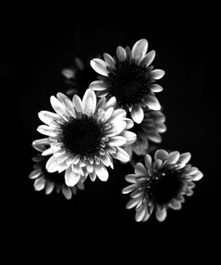

Bunch of Daises
This photo of a bunch of daises was shot when I first started becoming passionate about black and white photography. The photograph was taken with a Canon Rebel G while I was living in North Miami Beach and had my own darkroom. The camera used 35mm film and was designed for mostly automatic use. I learned that these features weren't always the best for creative photography as different exposure settings can create very different effects on a photograph.
Beetle in San Fransisco
This photo of a Volkswagen Aircooled Beetle was shot on a trip I took to San Fransisco with my wife, Laura. We walked a lot in the city and came across this neat scene. The photograph was taken with an early digital camera the Olympus Pen EP-1. The camera was compact and of a high resolution for the time, but I never really grew comfortable with it.
Beach Patrol South Beach
This photograph of an the Beach Patrol Headquarters was taken on South Beach while I lived there. It was hot during the day, so I often walked late at night and photographed with long exposures. This photo was taken with my first medium format camera that took 120mm sized film. The camera was a TLR (Twin Lens Reflex) made by Minolta and called the Autocord.
Laura in Mount Dora
This is my wife Laura striking a pose! We were on vacation in Mount Dora and soaking up some rays on the veranda. The photograph was taken with my first digital camera and Olympus Camedia C-3030. The camera was pretty slow but a revolution for the time. It only took images with a resolution of 3.3 Mega Pixels.
Orchid at the White Orchid Inn
This photo was taken while on vacation with my wife in Vero Beach, FL. We enjoy taking road trips around the state and found this beatiful B&B called the White Orchid Inn. Of course we had to take photographs of all the gorgeous orchids in the rooms. This was taken with a Medium Format View Camera called the Hansa. It took images 2 1/4" X 3 1/4" in size on 120 mm sized film. One of the joys of working with this format was the ability to use Polaroid Sheet Film, which was readily available at the time. This was also taken with a fast lens call the Schneider Xentor which had a maximum F-Stop of F2.8.
Vines in Los Angeles
This was another photograph taken on our trip to the west coast. Laura and I were taken to the Huntington Botanical Gardens by a friend. The grounds were stunning full of interesting fauna. This image was taken of a work building on the grounds that had the most interesting vines growing on the walls. This was taken with the Olympus Pen EP-1.
SUVA on Lincoln Road
This image is of an interesting rstaurant that I stumble upon while walking on South Beach's Lincoln Road. This was also one of the first Large Format Photographs I ever took. The camera used was a vintage Graflex Speed Graphic Press Camera which took images on 4" X 5" sheet film. I had a blast walking around south beach taking photographs with Polaroid Type 55 Negative/Positive Sheet Film. Sadly this film is not available any more.
Lifeguard Station on the Beach
This was another photo taken with the Medium Format Minolta Autocord. The camera was compact and a joy to photograph with long exposures late at night. Having a good friend to walk around with made the process more fun as well. The fresh baked Pizza didn't hurt either.